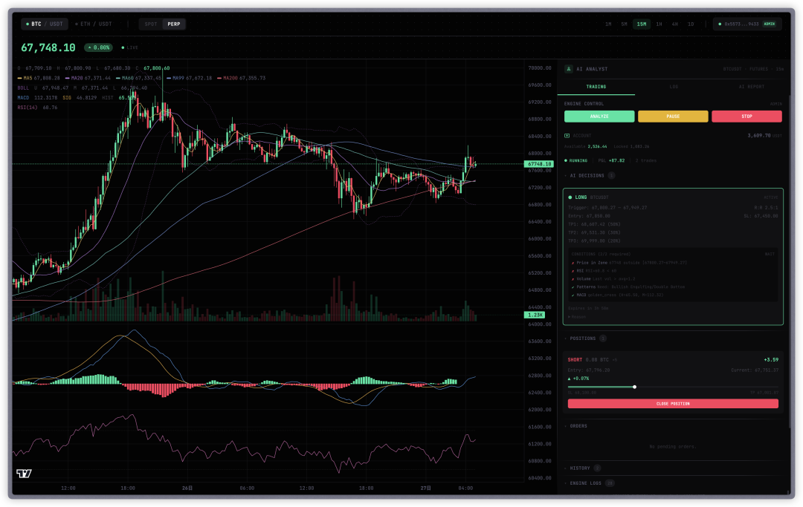

先放链接：
http://crypto.acexiamo.com/?market=FUTURES&interval=15m
目前还在模拟仓阶段，考虑先把 API 以及日志&监控部分给做好，之后上实盘做测试。今天想聊一下 Vibe Coding 的体验，依然用早期比较抽象的一句话——"我完全没有写一行代码 🤣"
当然，这确实是事实，作为 Vibe Coder 写代码那是一行不想写的，甚至不想动手敲~
说到"不想动手敲"，顺便提一嘴另一个项目——我自己造了个语音输入工具，接的 GLM ASR Model。起因是 Typeless 要花钱，而 GLM 的额度多到用不完，这玩意又很便宜，Typeless 一个月的订阅费轻度使用的话基本可以撑半年 😅 总之就是，能不动手就不动手。
系统架构
回到正题，聊聊这个量化系统的构成。整体思路是 「AI 负责"想"，规则引擎负责"做"」：
简单来说，高频、确定性的事情交给规则引擎跑，低频、需要"看盘感觉"的事情交给 AI。这样既省 token，又能保证响应速度。
AI 的 Tool Calls
AI 的集成主要在策略产出部分，我给 AI 提供了以下几个 tool_call 能力：
「getMarketData」
获取 K 线数据 + 技术指标。传入交易对、市场类型、K 线周期，返回最近 20 根蜡烛的 OHLCV 明细、整体统计（高低点、涨跌幅、均量），以及最新的 MA/EMA/布林带/MACD/RSI 指标值。AI 用它做多周期 Top-Down 分析——先拉 4h 看趋势方向，再拉 1h 看结构，最后拉 5m 找精确入场点。
「getCurrentPrice」
获取实时价格。轻量快速，返回当前最新成交价。AI 用它确认当前价格位置，判断是否接近关键支撑阻力位。
「identifyPatterns」
K 线形态识别。自动检测十字星、锤子线、吞没形态、双顶双底、三角形、旗形、V 型反转等经典形态，返回形态名称、多空方向、置信度和描述。AI 用它判断当前是否出现反转或延续信号。
「analyzeSupportResistance」
支撑阻力位分析。基于历史价格的波峰波谷聚类算法，返回 Top 5 支撑位和阻力位，附带强度评级和触碰次数。AI 用它确定止损止盈的关键价格位，以及判断当前价格在结构中的位置。
AI 通过这些工具可以产出结构化的策略 JSON，再由规则引擎来进行执行和响应~
工作流：Cursor 双 Tab 模式
再聊聊开发过程。我在 Cursor 中设置了两个 tab：
「Main」 —— 负责主线的设计以及任务拆解，相当于"架构师" 「Work Channel」 —— 负责具体的代码执行，相当于"开发者"
流程是：Main 产出任务丢给 Work Channel 执行，执行完再由 Main 进行 review，最后由我来确认 review 结果。这里顺带一提，Main 更适合用带思考的模型，Cursor 上的 opus 4.6 带思考和不带思考差距还是蛮大的——带思考的版本在架构设计和任务拆解上明显更靠谱。
另外还有 Claude 上的 Cowork，我现在通常用它来做项目的前期规划，通过讨论来产出 PRD 文档。和普通聊天比起来，Cowork 不受记忆影响，并且带有操作能力，可以理解成一个带 UI 的 Claude Code。说到记忆，这东西有时候挺烦的，偶尔聊个 IDEA 突然冒出来一个远古项目或者已经烂尾的项目，心情就有些微妙了 🥲
关于交易本身
说回交易经验，我其实并不多，偶尔看看，一般的交易基本由均线和清算驱动，不过经常受情绪影响最终决策，以至于小亏 ☹️ 这也是为什么想试试让 AI 来做决策——起码它不会 FOMO，不会手抖。
当然，这次也只是一个实验而已，至于成果如何倒也无关紧要，更多的还是在试探 opus 4.6 的能力边界。
写在最后
早前我有自己在心里给 LLM 做过排名——写后端和做架构设计非 Codex 不可，别的都差点意思。现在用下来我觉得 Claude 也不赖了，尤其是 opus 4.6 带思考的版本，在理解复杂业务逻辑和多步骤任务编排上表现很扎实。
"这就是如今的软件行业吗？"
❝结尾发出一句感叹 🤔 并非贩卖焦虑，我觉得当下正是利好
❞创造的好时代——工具越来越强，门槛越来越低，瓶颈从"能不能实现"变成了"想不想去做"。